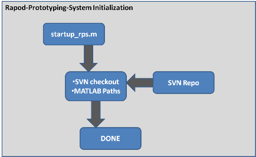

Rapid-Prototyping-System basic startup
This script will be executed every MATLAB startup and triggers first svn checkout during the first startup with RPS. This script will be installed using the *.exe installation file and triggers everything needed for installing/setup. RPS itself will be loaded from a given SVN-Server using a custom URL/Credentials.
Contents
Basic Startup Process

try
Initialize RPS
Setup basic Paths and Preferences needed.
disp('### Initializing Rapid-Prototyping-System...'); scriptPath = mfilename('fullpath'); [path, name, ext] = fileparts(scriptPath); guiPath = [path '\gui']; % Create RPS Pref with home dir pref_group = 'RapidPrototypingSystem'; setpref(pref_group,'HomeDir',path);
### Initializing Rapid-Prototyping-System...
Check if RPS initialize state
if ~ispref('RapidPrototypingSystem', 'isInitialized'); % First RPS startup... initialize % -> Checkout RPS Data from Repository % TODO: ... setpref(pref_group,'isInitialized', 'true'); end
Build Searchdatabase for help files
%htmlFolder = fullfile(path,'help', 'html'); %builddocsearchdb(htmlFolder);
Finish
Change Dir to RPS...
cd(path);
disp('### DONE without Errors!');
### DONE without Errors!
catch
Error
disp('### ERROR: startup_rps.m failed!')
end